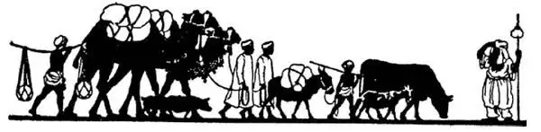
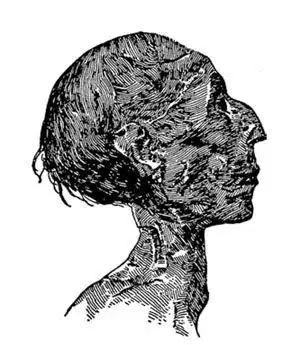
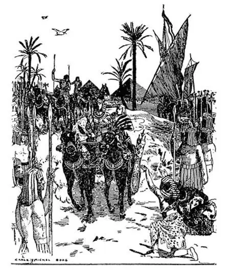

09
The Jews Search For a Home
寻找家园的犹太人

YOU are spells Ur . It is one of the shortest names I know. It is the name of a little place in that part of Babylonia called Chaldea. In this place—about nineteen hundred years B.C.—there lived a man named Abraham. Abraham had a very large family and though he had no money, he was rich. He had large herds of sheep and goats, and these were the chief riches in those days. Now Abraham believed in one God, as we do, while his neighbors, the Babylonians, worshiped many gods and the heavenly bodies, such as the sun, moon, and stars, as I have just said. Abraham did not agree with his neighbors for this reason; and his neighbors didn't agree with him, either, for they thought his ideas were peculiar or even crazy. So, about nineteen hundred years before Christ, Abraham took his large family, his flocks, and his herds and moved to a land called Canaan, far away near the Mediterranean Sea.
Abraham lived to be a very old man, and he had a large family. One of his grandsons named Jacob, who was also known by the name of Israel, had a son Joseph. You probably remember the Bible story of Jacob's favorite son Joseph with the coat of many colors. Joseph's brothers were jealous of him, as children and even dogs are apt to be jealous of anyone who is liked better than they are. So they put Joseph into a well and then sold him as a slave to some Egyptians who were passing by. Then they told their father Jacob that Joseph had been killed by wild animals. The Egyptians took Joseph to far-off Egypt—far away from Canaan.

Abraham leaving Ur, 1900 B.C. （公元前1900年亚伯拉罕离开吾珥）
As I told you, it was very difficult for anyone to work his way up out of his class to a higher class. Nevertheless, Joseph was a slave in Egypt, and he was so bright that at last he became one of the rulers in Egypt.
At that time when he was ruler, there came a famine in Canaan and there was no food. In Egypt, however, there was plenty of food stored up. So Joseph's wicked brothers went down to Egypt to beg the rulers for bread. They probably thought by that time their brother was dead. They did not know that he had become such a great man and that he was now the ruler from whom they were begging food. You can imagine how surprised they were and how ashamed they must have felt when they found out that the great ruler was their own brother, whom they had planned to kill and then had sold as a slave.
Joseph might have let his brothers starve to death or put them in prison, or sent them back to Canaan without anything, if he had wanted to revenge himself on them. Instead of doing any of these things, he gave them not only all the food they wanted and more to take back home, but made them rich presents besides. Then he told them to go back and get the rest of his family and return with them to Egypt, and he promised to give them a piece of land called Goshen where there would be no famines and they might live happily. They did as they were told, and Israel and his sons and all their families came down and settled in Goshen about 1700 B.C. They were called Israelites, which means of course the children of Israel. These are the people we now call the Jews.
After Joseph, who was of course an Israelite himself, died, the kings or Pharaohs of Egypt did not like these foreign people and treated them very badly, as other peoples have often treated the Jews badly ever since. Though the Jews and their children and children's children lived in Egypt for about four hundred years, they were enslaved by the Egyptians.
Now about four hundred years from the time the Jews first came into Egypt— 400 from 1700 is 1300 B.C.—there was a ruler of Egypt called Rameses the Great.
Rameses so feared the growing number of Jews that finally he gave orders to have every Jewish boy baby killed. In this way he thought to control these people. One little Jewish boy named Moses, however, was saved, and when he grew up he became the greatest leader of his people. Moses wanted to get the Jews out of this hostile country where the people worshiped false gods. At last he led all his people out of Egypt across the Red Sea. This was called the Exodus , and it took place about 1300 B.C.

Rameses's mummy （拉美西斯的木乃伊）
After the Jews had left Egypt, they first stopped at the foot of a mountain called Mount Sinai, while Moses went up to the top where he could be by himself and learn what God wanted him and the Jews to do. Moses spent forty days praying on top of the mountain. When he came down from the mountaintop, he brought with him the Ten Commandments, the same Ten Commandments you may have learned in Sunday school. But Moses had been gone so long that when he came back again to his people, he found them worshiping a golden calf as the Egyptians had done. They had lived in Egypt until they had come to think it was all right to worship idols.
Moses was very angry. It was high time, he thought, that they should get rid of the bad influence of their old Egyptian neighbors. At last he succeeded in making them worship God again and gave them the Ten Commandments for their rule of life. So Moses is called a lawgiver and the first teacher of the Jewish religion. The Jews wandered from place to place for a great many years before Moses died. Then Joshua, their new leader, led them into Canaan.
The Jews had no kings. They were ruled by men called judges, but the judges lived very simply, just like everyone else and not like kings in palaces with servants and fine robes and rich jewels. But the Jews thought it would be better to have a real king like their neighbors had.
At last a judge who was named Samuel said they should have a king, and Saul was chosen. Then Samuel poured olive-oil over Saul's head. To us this seems a strange thing to do, but it took the place of putting a crown on his head and was a sign that he was to be king. Samuel, therefore, was the last one of their judges, and Saul was their first king.
All other nations at that time believed as the Egyptians and Chaldeans did, in many different gods. The Jews alone believed in one God and lived by laws they believed God had given them. They had a holy book that contained these laws and recorded their early history. This book is also known as the Old Testament and has been made a part of the Christian Bible. Many Old Testament stories also appear in the Koran, the Muslims' holy book.

Rameses the Great （拉美西斯大帝）
This is the story of the Jews, who gave us the Old Testament and the Ten Commandments, and here is the way they wandered:
From Ur to Canaan—1900 B.C.
From Canaan to Egypt—1700 B.C.
From Egypt back to Canaan—1300 B.C.. You can see that they finally settled down in Canaan, and then they called that land their home.
【中文阅读】
英语中，“你”和“吾珥”的读音相同，吾珥是我所知道的最简短的英语名字之一，由两个字母u 和r 组成，u 和r 在英语中读作“是你”。巴比伦王国有个地区叫迦勒底，吾珥就是那么一个小地方的名字。大约在公元前1900年，吾珥住着一个叫亚伯拉罕的人。他有一个大家庭，尽管他没有钱，但是却很富有。他有大群大群的绵羊和山羊，在当时家畜就是最主要的财富。亚伯拉罕只信仰一个神，和我们一样，而他的邻居巴比伦人却信奉很多的神和太阳、月亮、星星这样的天体，这一点我在前面说过了。亚伯拉罕不认同巴比伦人，巴比伦人与他也不相投，认为他的想法古怪，甚至疯狂。因此，公元前1900年左右，亚伯拉罕带着他一大家子人还有他的羊群、牲畜迁移到一个很远的地方，那里靠近地中海，叫迦南。
亚伯拉罕活了很大岁数，有一个人口众多的大家庭。他有一个孙子叫雅各，雅各还有一个名字，广为人知，叫“以色列”。雅各有个儿子叫约瑟。你可能还记得圣经中写到雅各的爱子约瑟得到父亲所赠的“彩衣”而引起兄弟们嫉妒的事。约瑟的兄弟们嫉妒他，就像小孩们会嫉妒那些比他们更讨人喜欢的孩子，狗也会嫉妒那些比它们更讨人喜欢的狗一样。所以，他们先是把他丢进一口井里，后来又把他卖给过路的埃及人做奴隶。然后，他们对父亲雅各说，约瑟被野兽吃掉了。埃及人将约瑟带到了远方的埃及——与迦南相距遥远。
我在前面说过，埃及的等级制度十分严格，任何人想从下等阶级升到上等阶级非常难。然而，约瑟在埃及虽是个奴隶，但是他太出类拔萃了，最终进入了埃及的统治阶层。
在雅各执政期间，迦南发生了大饥荒，没有粮食。可是，埃及却有充足的粮食储备。所以，约瑟那几个缺德的兄弟南下到了埃及，乞求当政者施舍一点食物。他们大概认为他们的那个兄弟早就死了，却不知他已是如此显赫的大人物了，正是他们向之乞讨的那个当政者。你可以想象，当他们发现那个高高在上、大权在握之人正是他们设计杀害、后又卖为奴隶的兄弟时，他们是多么的惊讶和羞愧啊！
如果约瑟想报复他的兄弟们，他完全可以让他们饿死算了，或者将他们投入监狱，或者打发他们空手回迦南。但是，他并没有那样做，反而给了他们自身所需的食物并另外带回去粮食，不仅如此还送给他们丰厚的礼物。然后，他让他们回去，把家里所有的人都带到埃及来，他还许诺给他们一块叫歌珊地的领地，那儿不会有饥荒，以后可以过上好日子。他们照他说的做了，公元前1700年左右，以色列和他的众多儿孙及他们的家人南下来到歌珊，在那儿定居下来。人们叫他们“以色列 人”，意思当然是以色列的子孙。以色列人也就是我们现在所说的犹太人。
不用说约瑟本人就是以色列人，他死后，埃及的国王们，也就是法老们，不喜欢这些外族人，于是就虐待他们，从那以后其他民族的人也经常以同样的态度虐待犹太人。尽管犹太人和他们的子孙及子孙的子孙在埃及生活了将近四百年，却一直受埃及人的奴役。
从犹太人最初来到埃及大约400年后——从公元前1700年起过了400年，也就是公元前1300年——那时埃及的统治者是拉美西斯大帝。
犹太人人口不断增加让拉美西斯感到恐惧，最终他下令杀死所有犹太男婴。他觉得这样做就可以控制住犹太人。可是，有个叫摩西的犹太小男孩却获救了，他长大后成了犹太人最伟大的领袖。摩西想带领他的族人离开这个仇视犹太人的国家，因为埃及人信仰虚伪的多神教，最后他带领着他们越过红海离开了埃及。这件事记载在圣经里，叫做《出埃及记》，发生在公元前1300年左右。
犹太人离开埃及后，他们首先来到一座叫西奈山的山脚下，摩西登上山顶，独自一人在那里接受上帝的启示，懂得了他和犹太人今后如何行为规范。摩西在山顶上祈祷了四十天，然后带着上帝授予的十条戒律下了山。这“十诫”你们在主日学校里可能学过。可是，他离开的时间太长了，当他下山回到他的族人中时，他发现他们竟然像埃及人那样在敬奉一只金牛。原来他们在埃及住久了，潜移默化中地也慢慢觉得信仰多神是对的。
摩西非常生气，他想现在是他们摆脱埃及人坏影响的时候了。最后，他终于使他们又重新信仰上帝，并把十诫传给他们作为他们生活的规范。因此，摩西被称为“律法制定人”和犹太教的第一位导师。摩西死前，犹太人多年来四处漂泊。摩西死后，他们的新领袖约书亚带领他们来到了迦南。
犹太人没有国王，管理他们的人叫“士师”，但是这些士师生活很简朴，和其他人没有区别，而不像国王们那样住在满是奴仆的宫殿里，穿着精美的长袍，戴着贵重的珠宝。但是，犹太人认为还是像他们的邻邦那样有一位真正的国王可能会更好。
最后，有个叫撒母耳的士师说，他们应该有一位国王，随后扫罗被选中成为国王。此时，撒母耳将橄榄油泼到扫罗头上，我们会觉得这样做很奇怪，但是对他们来说这样做相当于给他戴上王冠，象征他将成为国王。因此，撒母耳就是犹太人最后一个士师，而扫罗是第一位犹太国王。
当时别的民族都和埃及人或迦勒底人一样，信仰多神教，只有犹太人信仰一个上帝，相信上帝授予的诫命，并严格遵守。他们有一本圣书，里面写有这些诫命并记载他们早期的历史。这本书也叫旧约，现在已经成为基督教圣经的一部分。旧约中的很多故事也出现在《古兰经》中，《古兰经》是穆斯林的圣书。
这就是犹太人的故事，他们给我们带来了旧约和十诫，以下是他们漂泊的历程：
从吾珥到迦南——公元前1900年
从迦南到埃及——公元前1700年
从埃及重返迦南——公元前1300年。你可以看出来他们最终定居在迦南，后来他们把这块土地称作自己的家园。